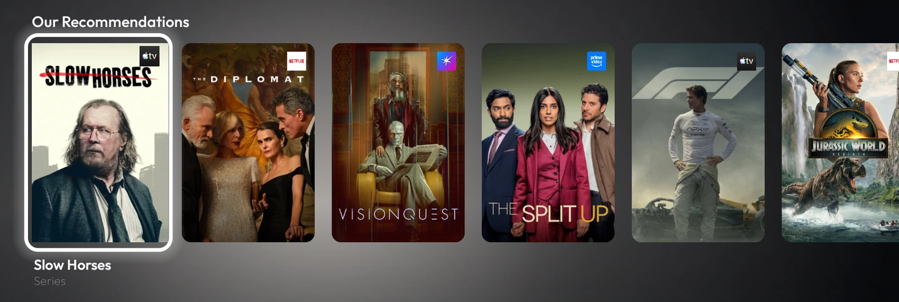

Your apps. Your languages. Better things to watch.
Our own recommendation layer brings curated picks, popular titles and recent releases into one home screen, shaped around your streaming apps and preferred languages.
Beta V1 · India catalogue · Availability varies by build and provider

Our Recommendations, captured on the Redmi test TV.
Selected for your Home.Curated titles meet local preferences.
The recommendation journey
A shared catalogue. A local choice.
SweepTV supplies the selection, ranking, filtering and delivery logic. Title metadata, artwork, ratings and provider availability come from third-party sources.
In the catalogue
Find and check titles
Curated entries, popular titles and recent releases are checked for the region, provider link, artwork and supporting metadata before publication.
On your TV
Apply your choices
The launcher narrows the pool to supported apps installed on your TV and the original languages you select, then ranks eligible titles locally.
On your Home screen
Build useful shelves
Picks appear in discovery and app-specific rows. Saved data remains available between refreshes, while new catalogue entries and artwork arrive.
Keyless recommendations in development builds
The hosted catalogue refreshes independently of your TV. The downloadable preview uses a TMDB key for discovery.
Explore the filters
Just Netflix. Just English.
That is a valid setup. When Netflix and English are your choices, eligible recommendations stay within those choices.
Try a sample catalogue
India · snapshot from 19 November 2026
This small sample demonstrates provider and original-language filtering. It does not run the full TV ranking or check your subscription.
Choose an app and language to explore the sample.
The sample is a small saved selection, not the full current catalogue. Service availability and ratings can change.
Language means the original language.
An English filter uses the title’s original-language metadata. It does not promise that English dubbing or subtitles are available. Strict language choices can also reduce the number of eligible picks.
The selection logic
More than a popularity list.
Beta V1 uses explicit selection rules. Editorial picks can stay near the front, while the remaining slots rotate from the eligible catalogue.
Signals used by the current local ranking rules
Signal
How it helps
Editorial selection
Curated catalogue entries can be retained ahead of the rotating pool.
Popularity and trending
Catalogue order and available weekly-trending markers help bring timely picks forward.
Release recency
Recent release-date metadata can improve a title’s position. Recency has less influence as that date gets older.
Local recent activity
Where supported apps share activity with SweepTV, recent provider and available genre signals can influence the rotating pool. Already-seen titles can be excluded from that pool.
Variety and identity
Duplicate titles are removed, and provider-balancing rules help spread eligible picks across the available services.
Ratings add context.
IMDb scores appear where available. They help you assess a title; a score alone does not determine your recommendation shelf. Missing history or genre metadata means those local ranking signals may not be available.
Different shelves, different jobs
A useful place for each pick.
Our Recommendations
A mix of retained editorial picks and locally ranked, rotating titles. The row aims for up to 12 eligible picks.
Trending
Popular discovery titles from the available catalogue, narrowed to the supported apps and languages relevant to your setup.
Recently released
A shelf that favours recent release-date metadata. A title’s original release date and its arrival on an OTT service can differ, so this is not a guarantee of its platform premiere date.
App recommendations
Up to 12 unique eligible titles for a supported app. A shorter row can draw from other saved, verified picks for that same app where the build supports fallback sources. Language choices still apply.
Continue Watching is separate: it uses resume entries and activity shared by supported apps. It is not a list generated from the discovery catalogue.
Refresh, reuse, respect your data
Fresh picks. A familiar starting point.
Six-hour refreshes
The shared catalogue is scheduled to refresh every six hours. Your TV checks for updates and rotates eligible recommendations in six-hour windows. Retained editorial picks and a small filtered pool can keep some titles on screen across windows.
Saved data first
The launcher reuses downloaded catalogue data and artwork. In current test builds, display-sized thumbnails are cached and visible cards get priority, so lower rows can load as you scroll.
Local ranking
Ranking runs on your TV. The request for the shared regional catalogue sends no viewing-history or profile payload. Local activity can influence choices without being included in that catalogue request.
These statements describe SweepTV’s catalogue and ranking flow. Streaming apps and optional third-party metadata services have their own data practices.
Where we are today Beta V1
India first. Still getting better.
Beta V1 is being tested with the India catalogue. The recommendation engine has its own version, separate from the launcher APK version.
Provider and language coverage varies with the catalogue and your build.
A narrow filter can produce fewer than 12 eligible titles.
Availability checks can become outdated as streaming catalogues change.
Installing a streaming app does not confirm your subscription or playback entitlement.
Catalogue coverage, metadata quality, rotation and startup performance are being refined.
Our own recommendation logic sits alongside third-party title data and the open-source components credited by SweepMyTV.
A few practical questions.
Do I need a TMDB API key?
The hosted catalogue works without a personal key in builds that support it. The downloadable preview uses a TMDB key for discovery.
What if I use only one streaming app?
The installed-app filter keeps normal discovery recommendations within the supported apps on your TV. With only Netflix and English selected, eligible discovery picks stay within Netflix and English. A small matching catalogue can produce a shorter row.
What happens when the catalogue service is unavailable?
Previously downloaded picks and artwork can still be shown. Fallback sources depend on your build and saved data. Playback and fresh provider availability still depend on the streaming service and your connection.
Why might I see the same title again?
Editorial picks can remain across refreshes, and the eligible pool can be small after filtering. A six-hour rotation does not promise that every slot changes or that every suggestion is new to you.
Does a title card guarantee I can watch it?
A title link opens the relevant provider where supported. Your plan, region, account and the provider’s current catalogue determine playback. Prime Video catalogue checks aim to exclude rent-only picks.
Make your TV feel like yours.
Explore the launcher, choose your apps and languages, and help shape the next version.